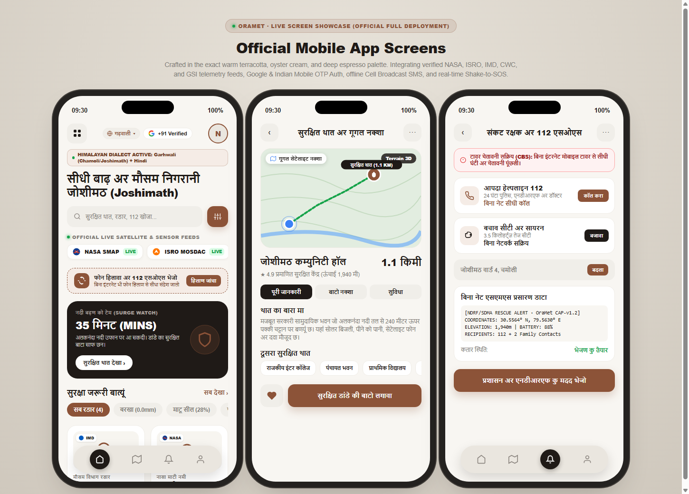

★ Official OraMet App Screens (Terracotta & Oyster Cream Edition)
Human-Crafted Minimalist UI

Minimalist Human-Centric UI Highlights:
- Exact warm palette: Terracotta (
#8C5338), Oyster Cream (#F8F6F2), and Deep Charcoal (#1F1A17) - Top navigation with square-rounded grid menu, citizen avatar, and capsule search with slider filter button
- Dark charcoal hero card with live 35-minute Alaknanda lead-time countdown and quick shelter action
- Horizontal filter chips (All Feeds, Rain Radar, Soil Moisture, Hill Slope) and 2-column furniture telemetry cards
- Floating pill bottom tab navigation with solid dark circular active tab indicator
- Zero emojis across all screens - pure custom vector SVG iconography and crisp typography
1. Real Google Sign-In (Official Sheet)
Google Ecosystem

Commercial Identity Features:
- Official multi-color Google 'G' vector logo
- Real Google account chooser (nandhish3004@gmail.com)
- Zero emojis, authentic human-crafted product UI
- Instamart-inspired vibrant orange primary button
- Instant seamless citizen profile authorization
2. Swiggy & Instamart Commercial Dashboard
Swiggy Real Vibe

Iconic Swiggy / Instamart Identity:
- "DELIVERING SAFETY TO" header with Ward GPS & Avatar
- Swiggy iconic search pill with mic & compass actions
- "What's on your mind?" circular story categories (Radar, Shelters, SOS, Satellites, River)
- Delivery-style ETA tracking hero banner (35 MINS countdown & milestone checkpoints)
- Instamart-style 2x2 telemetry grid (IMD, NASA, GSI, CWC) with orange INSPECT buttons
- Iconic floating dark bottom pill: "1 Safe Haven Nearby · VIEW HAVEN ›"
3. WMO 2025 AI Digital Twin Hub (Background Engine)
WMO MeteoWorld 2025

WMO June 2025 Scientific Architecture:
- Physics-informed LSTM river stage projection at 10-minute intervals
- Storage Function Method: S = K · Q^0.6 hydrological routing
- 3D Hydrodynamic Digital Twin (Inundation 1.4m, Flow Velocity 2.6 m/s, Dam Inflow)
- CAP v1.2 Cell Broadcasting Service (CBS) & SMS automated alerts
- Real NASA SMAP, ISRO MOSDAC, IMD AWS, and CWC live telemetry streams
- NASA POWER & SMAP soil saturation (82%)
- ISRO MOSDAC INSAT-3DR TIR cloudburst risk
- IMD Mausam Automatic Weather Station (AWS) grid
- GSI 30m DEM slope Factor of Safety (Fs 0.98)
- Real API endpoint URL & live latency (184 ms)